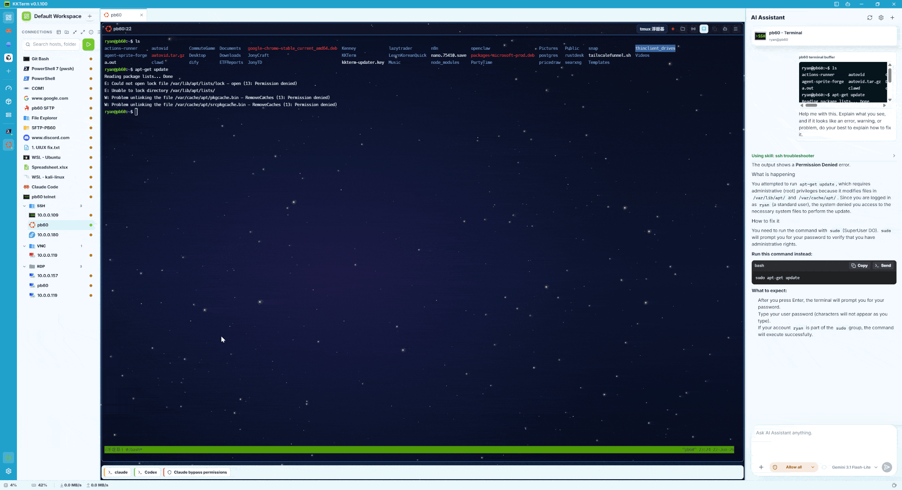

One window for the daily pile
Terminals, SSH, SFTP/FTP, RDP, VNC, URL Connections, and Dashboard widgets share the same Workspace instead of scattering across your taskbar.
Cross-platform · local-first · open source
KKTerm puts local terminals, SSH, SFTP/FTP, URL Connections, RDP/VNC, Dashboard widgets, and approval-gated AI tools in one native Tauri app for operators who move across Windows, macOS, and Linux.
Terminals, SSH, SFTP/FTP, RDP, VNC, URL Connections, and Dashboard widgets share the same Workspace instead of scattering across your taskbar.
Durable non-secret data stays in SQLite. Secrets stay in the OS keychain. KKTerm does not require a cloud account or ship telemetry.
Approval-gated tools can help with Connections, Sessions, Dashboard widgets, and MCP workflows without turning the app into an unattended robot.

The demo GIF is intentionally part of the landing page so shared links show a real app preview instead of another text-only project page.
Hyper-V, AD, IIS, RDP, PowerShell, router UIs, and SSH hosts in one operator surface.
Many small systems, mixed protocols, recurring tasks, and quick checks that deserve a durable cockpit.
Named tmux Sessions help long-running Claude Code, Codex, and similar agents survive reconnects.
A star is the fastest signal that this cross-platform admin workspace is worth continuing publicly. Feedback is even better.